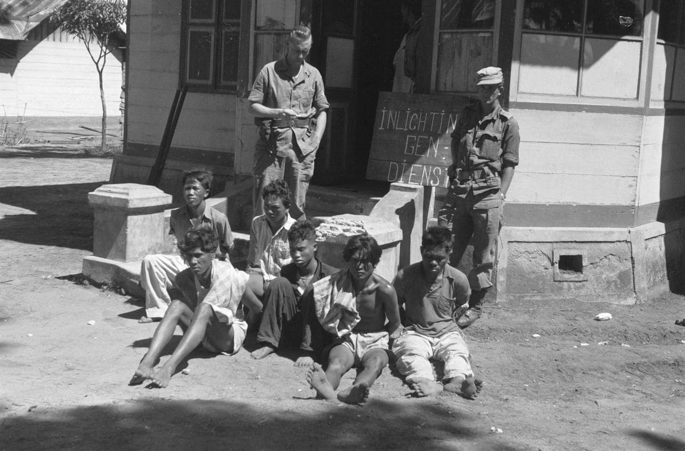
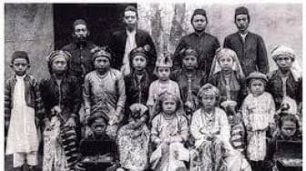

Pada akhir abad ke-19, rakyat menderita karena kebijakan kolonial, terutama adanya berbagai macam pajak yang memberatkan (pajak tanah, pajak hasil bumi) dan praktik kerja paksa (rodi).

Raden Kohar yang dikenal sebagai Samin Surosentiko adalah tokoh sentral dari Desa Ploso Kedhiren, Blora. Ia mengajarkan perlawanan dengan cara yang berbeda, yaitu dengan damai.

Ini adalah inti dari Gerakan Samin. Bentuk perlawanan yang dilakukan para pengikut Samin antara lain: Menolak membayar pajak kepada pemerintah Belanda. Tidak ikut kerja paksa (rodi).

Perjuangan Samin memberikan dampak besar: Bagi rakyat Samin: Menumbuhkan rasa percaya diri, harga diri, dan semangat kemandirian tanpa kekerasan. Bagi Belanda